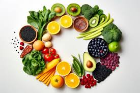

1. Apples
Apples contain fiber, vitamin C, and numerous antioxidants. They are very filling and make the perfect snack if you’re hungry between meals.
2. Avocados
Avocados are different from most other fruits because they contain lots of healthy fat. They are not only creamy and tasty but also high in fiber, potassium, and vitamin C. Swap mayonnaise for avocado as a salad dressing, or spread it on toast for breakfast.
3. Bananas
Bananas are a good source of potassium. They are also high in vitamin B6 and fiber and are convenient and portable.
4. Blueberries
Blueberries are both delicious and high in antioxidants.

5. Oranges
Oranges are well known for their vitamin C content. What’s more, they’re high in fiber and antioxidants.
6. Strawberries
Strawberries are highly nutritious and low in both carbs and calories.
They provide vitamin C, fiber, and manganese and make a delicious dessert.
7. Eggs
Eggs are highly nutritious.
Once demonized for being high in cholesterol, expertsTrusted Source now see them as a useful source of protein that may have various benefits.
8. Meats
Lean, unprocessed meats can be included in a healthy diet.
9. Lean beef
Lean beef is an excellent source of protein if you consume it in moderation. It also provides highly bioavailable iron.
10. Chicken breasts
Chicken breast is low in fat and calories but high in protein. It’s a great source of many nutrients.
11. Lamb and mutton
Sheep are usually grass-fed, and their meat tends to be high inTrusted Source omega-3 fatty acids compared with omega-6. Are u guys interested about solar system?